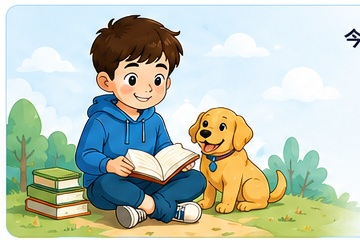
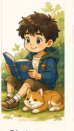
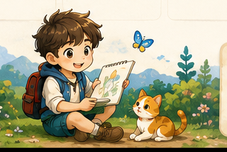

直接回答题
Answer only → Exact science word
固定句型：
The _____ is _____. / It is _____.
Example: The brown spots on the underside of the fern leaf are spore bags.
今天的学习路线已经准备好了。完成一项，就向前走一步。


从书架选择一本书，查看阅读进度，并沿着探险地图继续前进。
点击书籍进入正式阅读导览。
所有书籍与章节的总体进展。
完成章节后，路线会自动向前推进。
Diversity of Living and Non-living Things · Classification of Living Things · Diversity of Materials
先判断题型，再套句型；横线部分必须换成题目的证据与科学关键词。
固定句型：
The _____ is _____. / It is _____.
Example: The brown spots on the underside of the fern leaf are spore bags.
固定句型：
_____ belongs to _____ because it has / can _____. _____ have / can _____.
Example: Plant Z is a flowering plant because it has fruits. Fruits develop from flowers.
相同：
Both A and B _____.
不同：
However, A _____, while B _____.
Example: Both birds and fish have an outer covering. However, birds have feathers, while fish have scales.
固定句型：
The plant does not have enough _____. Without _____, it cannot _____. Therefore, it will _____.
Example: The plant does not have enough water. Without water, it cannot grow healthily. Therefore, it will eventually die.
问最终结果时写 will die，不写 may droop。
固定句型：
_____ is suitable for making _____ because it is _____. Therefore, it can _____.
Example: Plastic is suitable for making an umbrella because it is waterproof. Therefore, it can prevent rainwater from passing through.
Keywords: strong · flexible · absorbent · waterproof · transparent
读图：
Based on the graph, _____ has the greatest / least _____.
计算：
_____ + _____ = _____ cm（必须写单位）
Example: Based on the graph, the plant had the greatest increase in height in Week 2.
Aim：
To find out how _____ affects _____.
Fair test：
Change only _____. Keep _____ the same. Measure / observe _____.
Example: To find out how the amount of water affects the growth of a plant, change only the amount of water. Keep the type of plant, amount of light and type of soil the same. Measure the height of each plant.
固定写法：
1. _____.
2. _____.
Example:
1. Amphibians do not have any outer covering on their skin.
2. Amphibians live both in water and on land.
圈出 two、two reasons、each correct answer 和 not。
固定句型：
We should _____ so that _____.
Example: We should water the plant so that it can obtain enough water to grow healthily.
need air, water and food · grow · reproduce · respond to changes
trap light · make food · flowering plants produce flowers and fruits · non-flowering plants reproduce from spores
birds—feathers; fish—gills, fins, scales; amphibians—moist skin; mammals—hair or fur; insects—six legs, feelers, three body parts
strong · flexible / stiff · absorbent / waterproof · transparent / translucent / opaque · float / sink
题目与答案全部使用英文。OEQ 采用关键词、证据和因果链检查。
Chapter knowledge, Worked Examples and marking evidence received through Section 2.3.4.
30 minutes · 20 marks · 5 MCQs + 3 structured questions
OEQ marking checks required scientific ideas and keywords. A parent or teacher should still review unusual but scientifically correct wording.
把教材放进书架，点击书本更新进度或继续学习。
集中查看考试、比赛和重要活动，提前安排准备时间。
看看知识树、任务、英语技能和阅读足迹的成长。
发现错误、完成订正、间隔复习，让每一道错题最终毕业。
照片会压缩后保存在当前浏览器，也会包含在 JSON/Drive 同步数据中。
修改标题、作息、阅读目标与备份数据。
头像只在设置页管理，不再占用左侧导航空间。
保存后会同步更新浏览器标题、首页欢迎语和周计划标题。
学习数据仍会保存在当前浏览器中；JSON 备份可用于离线恢复。
手机保存到云端，Mac 再从云端载入；Mac 更新后也可以反向同步。
Read deeply · Think clearly · Write bravely · P3 Standard + Challenge
先读懂，再思考；不是遇到每个生词都停下来。
先完成核心任务，轻松完成后再挑战。
1 个关键问题 + 1 个故事证据 + 1 句总结。
先口述，记下 3–5 个关键词，再写成完整句。
比较观点、解释作者选择、回应反方意见或深入主题。
每章选择最适合的一种，不需要全部完成。
在语境中理解单词，并写自己的句子。
Spot → Fix → Explain → Rewrite，并进入 1 / 3 / 7 天语法复习。
用动作、声音、表情和身体感觉呈现情绪。
人物选择 + 故事例子 + 为什么重要。
孩子复述所有情节：“最重要的一件事是什么？”
只写一个感受词：“哪个动作或细节让你这样想？”
整句抄书：“先用自己的话说，再解释它说明什么。”
注意力下降时，完成一个高质量回答即可停止。
Quick Check 不额外加题；每次只纠正 2–3 个重要问题。
朗读三遍：读准 → 按意群停顿 → 加入人物情绪。
从你自己的纸质书或电子书目录中复制。每行填写一个标题，系统会按当前章节顺序依次套用。
每天一章 · 约十分钟 · 重点积累词汇与好句
释义、例句和近义词保持英文，每章精选三个词即可。
保留原句的句式或表达方法，替换人物、动作或情境，写出自己的新句子。
先做系统范例，再把同一个规则迁移到自己的句子。
The system will provide one sentence with a grammar mistake.

完成后，Leo 会从词汇、好句、仿写和思考四个方面给出彩色点评与下一步建议。
改错不是结束：1 天、3 天、7 天再次复习，直到可以独立写对。
输入书名或 ISBN，可自动查找作者、封面和出版信息。
填写考试、比赛或重要活动信息。
填写教材资料后，它会出现在森林书架上。
请选择重置方式：
彩色反馈、成长建议与本章奖励
看题、重新作答、写出正确方法，再提交订正。